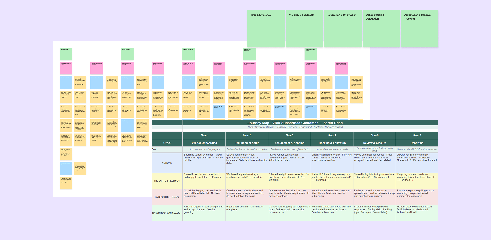
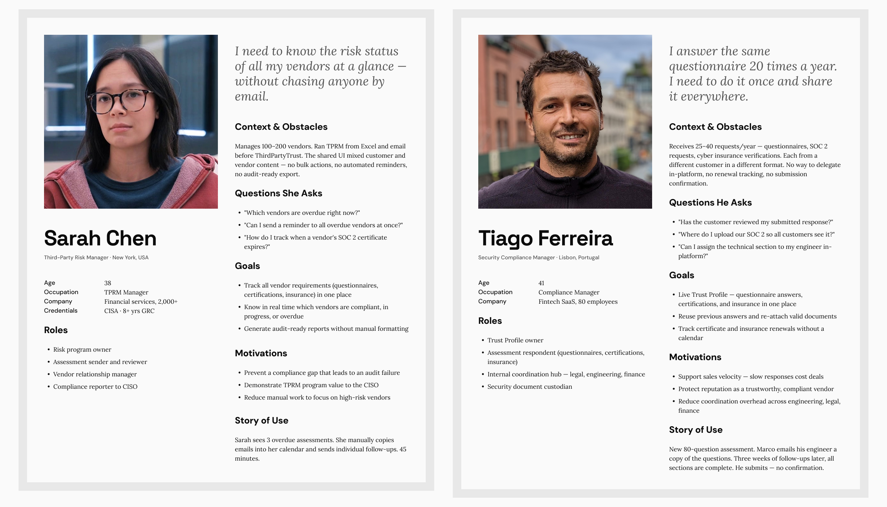
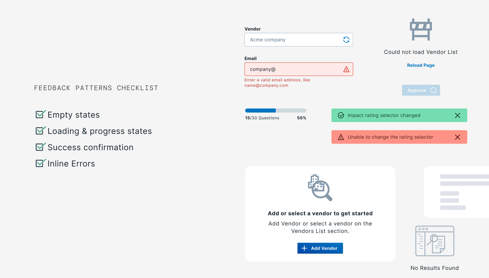
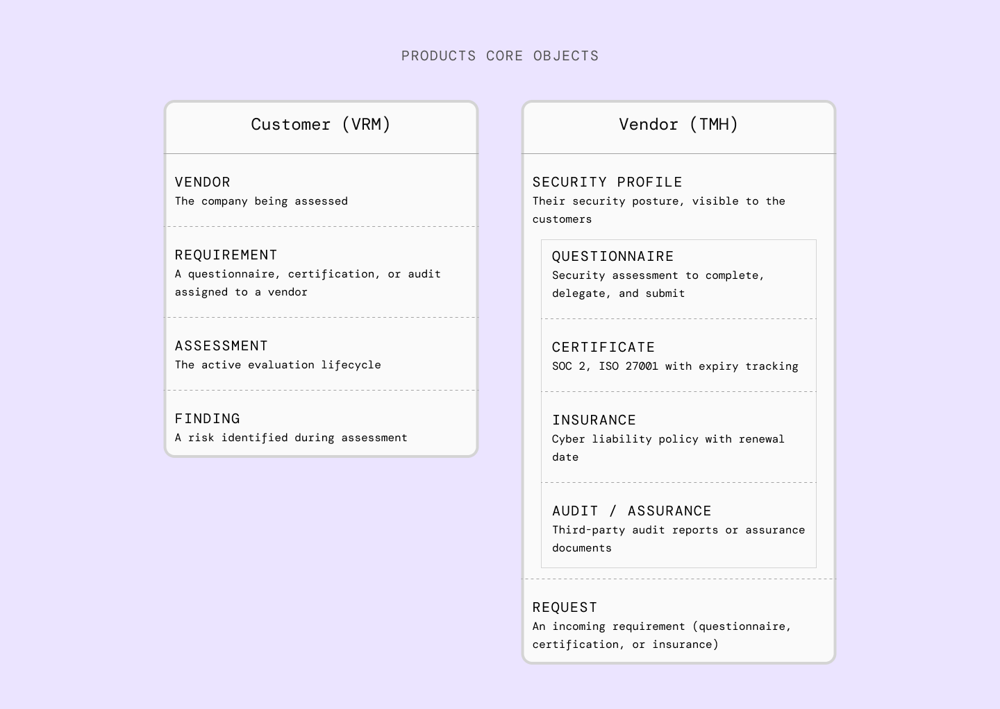
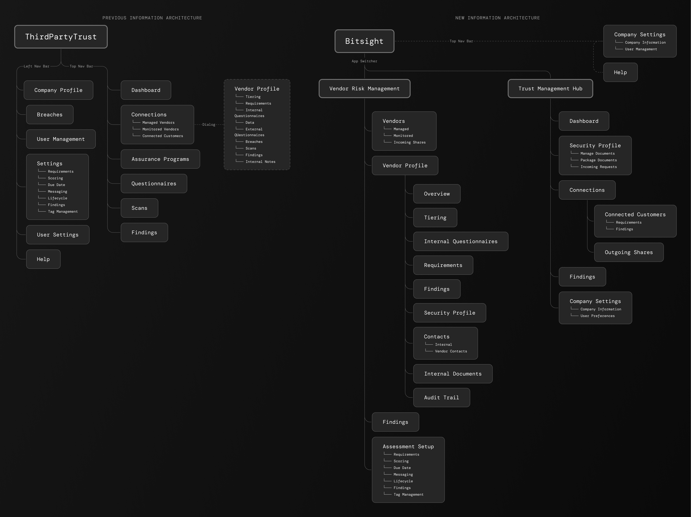
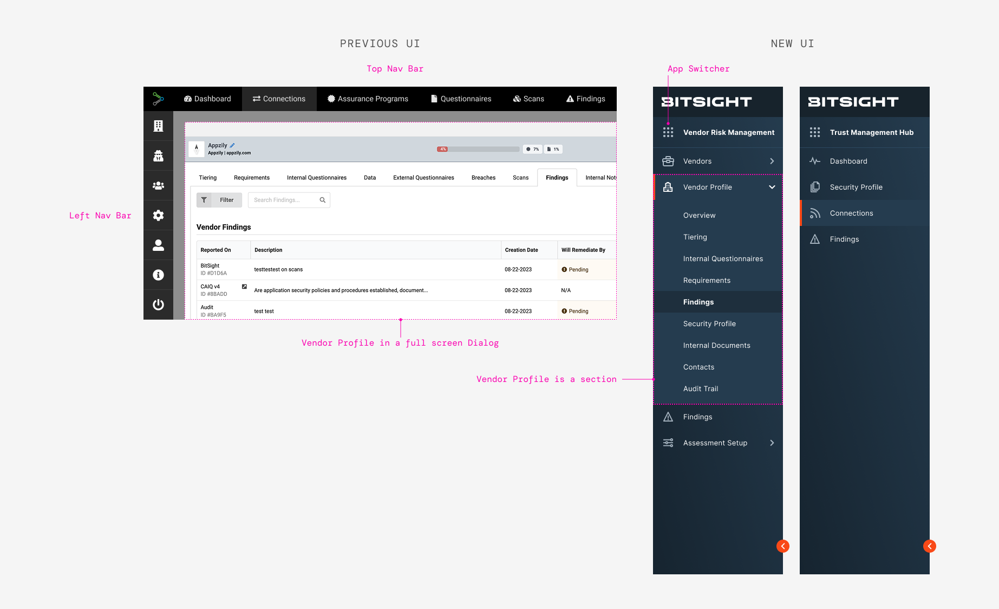
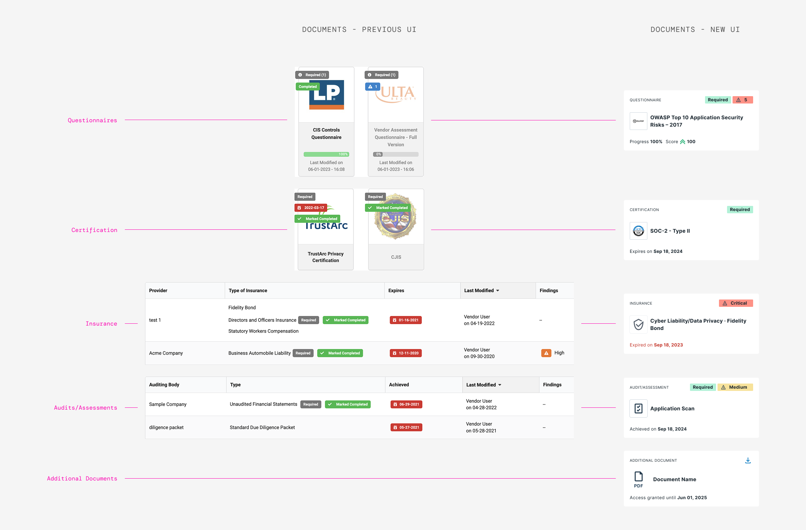
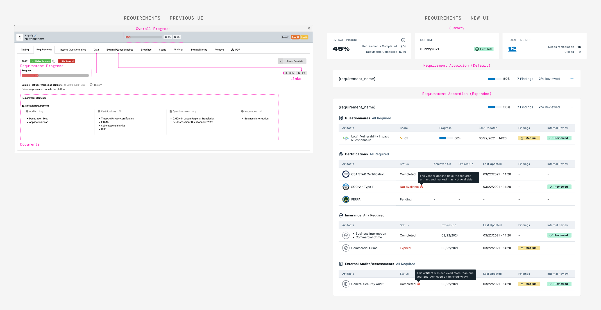

ThirdPartyTrust served two completely different user types in one shared UI, and neither felt like it fit. I was part of the research that drove the decision to split it into two dedicated products, Bitsight VRM and TMH, then led the navigation and user flow redesign for VRM, the customer-facing side, working closely with the TMH team on the vendor side.
A platform built without a design team
When I joined ThirdPartyTrust, a third-party risk management (TPRM) platform, the UI had been designed entirely by engineers: there was no UX team, no research infrastructure, and no clear picture of who was actually using the product. Two completely different user types — customers (companies managing vendor risk) and vendors (companies being assessed) — were navigating the same interface, with the same navigation, even though their goals had almost nothing in common.
The signal was already there: a high volume of support tickets, no support for free subscriptions, and no way to tell a usability problem from a missing feature. My job was to build the process to read that signal, and then act on it.
After Bitsight acquired ThirdPartyTrust in Q3 2021, the product split into two teams: VRM (Vendor Risk Management, the customer-facing side) and TMH (Trust Management Hub, the vendor-facing side). I landed exclusively on the VRM team, but kept working closely with TMH, since I already carried the product context from ThirdPartyTrust.
Two users. One navigation. Zero clarity.
The platform's core problem wasn't any single broken feature. It was structural: customers and vendors were forced to share the same mental model of the product, even though they were there for completely different reasons.
- Navigation confusion. The top bar and left sidebar served both user types at once. Customers looking for their vendor list and vendors looking for their pending assessments landed in the same place — with no clear path forward.
- No system feedback. Users couldn't tell if an action had succeeded. No confirmation after sending a questionnaire. Empty screens with no guidance on what to do next.
- Invisible users. Users without a subscription had no support channel. Their frustration generated support tickets through indirect channels, but without research, there was no way to distinguish a usability problem from a missing or poorly designed feature.
Understanding two different worlds
The research goal was exploratory: understand how each user type thought about their work, what they needed from the platform, and where the experience was breaking down. I used three methods, each chosen for a specific purpose.
- User interviews. To understand motivations, mental models, and day-to-day workflows. We talked to subscribed and unsubscribed users on both sides — customers and vendors. The goal was to hear how they described their own work before asking how the product fit into it.
- Affinity diagramming. To synthesize observations from all participants and surface shared themes. We ran sessions that became a shared understanding across the product team. It later served as a reference for the VRM and TMH products, which were built from that same research.
- Usability studies. To validate the new IA after the product split decision was made. Testing whether users could navigate the new structure before committing to building it.
The research team
This wasn't something I did alone. We worked with 2 product designers, 2 product managers, and 5 customer success teammates to plan and run the interviews. Customer success in particular gave us direct access to users, since they were already talking to them every day. Subscribed users were the primary signal; unsubscribed users showed us where the experience was silently failing.

Affinity diagram and Journey map — User research findings
Two personas emerged
Out of the interviews and the affinity diagramming sessions, two personas emerged, one per side of the platform. They became the shared reference point for design decisions on both the VRM and TMH teams — proof that customers and vendors needed genuinely different products, not just different views of the same one.

Sarah Chen and Tiago Ferreira — the customer-side and vendor-side personas that came out of this research.
What the affinity diagram surfaced
After clustering observations across all participants, five themes emerged consistently. Each one became a design principle for the new IA.
- Time. Users needed to jump between the Requirements tab, Data, and External Questionnaires just to review what a single vendor had submitted. Workflows had to be linear and fast, with no dead ends or unnecessary steps.
- Customization. Neither user type felt the platform was built for their context. Customers needed control over how their assessments were set up, like custom questionnaires; vendors needed control over their profile. Customization had to be a first-class concept.
- Collaboration. Both sides described their work as inherently cross-functional. Customers coordinated with internal security teams; vendors coordinated across legal, engineering, and finance. Contacts, roles, and delegation needed to be core objects in the navigation.
- Automation. Manual repetitive work was the biggest source of frustration on both sides: chasing vendors, tracking progress in spreadsheets, re-sending the same documents. Automation touchpoints needed to be integrated into primary flows, not optional add-ons.
- Navigation. Users didn't have clear workflows: a customer looking for their vendor list and a vendor looking for their active assessments shared sections. The platform lacked a conceptual model that matched how each user thought about their work, which is why the IA needed to be rebuilt around each user type.
A product that finally talks back
The "No system feedback" problem identified early on (section 02) had a simple root cause: there was no shared vocabulary for how the product talked back to users. Before any of the structural redesign work began, the very first patch shipped on ThirdPartyTrust was smaller: setting up Pendo guides for user onboarding. Those guides carried over when the platform moved to Bitsight and are still in use today.
The platform didn't confirm whether a questionnaire had been submitted, empty states had no guidance on what to do next, and errors were reported without clarity. Users landed on the platform and didn't know what to do without reaching out for technical support.
Every screen accounts for the same four states: empty, loading, success, and error. Actions confirm whether they succeeded or not. Empty states point to the next step instead of leaving a blank screen.
Feedback patterns, standardized
Bitsight DS already had a complete feedback pattern library — that wasn't the problem, the problem was inconsistent use. The solution was to build a checklist to confirm every new feature met those standards.
Empty states guide users on what to do before there's any data, instead of showing a blank screen. Loading and progress states confirm an action is in motion. Success confirmations give a clear signal when something completes, like sending a questionnaire. Inline errors surface next to the field or action that caused them.

The four-state checklist, kept close at hand on every project since.
Objects first, not features
The research revealed something deeper than a usability problem. Customers and vendors weren't just different personas — they were operating with fundamentally different conceptual objects. Merging them in the same navigation was the root cause of the confusion. The IA decision followed directly from that: split the products, one for customers and one for vendors.

Core objects — Customers and Vendors
Before & after
ThirdPartyTrust used a dual navigation — a top bar for primary sections and a left sidebar for settings. The redesign moved to a single left sidebar per product, each organized around its own object model.
Top navigation bar + left sidebar. Both user types shared the same primary navigation. While they could access the same sections, a quick fix before the acquisition was to show and hide sections depending on user type.
Two separate products. Each with a single left sidebar organized around its own core objects. Customers navigate Vendors, Assessments, and Findings. Vendors navigate Profile and Requests.

New information architecture — Before and After
In the original interface, opening a vendor meant launching a full-screen dialog with its own internal tab bar (Tiering, Requirements, Data, and several more), besides being a misuse of the pattern itself, there was no URL-level "you are here." The redesign folded Vendor Profile into a single, unified left sidebar as a real section, each tab got its own URL: Overview, Tiering, Requirements, and the rest each became genuine nav destinations with persistent context, instead of tabs trapped inside a modal.

Vendor Profile moves from a full-screen dialog to a nested section inside a unified sidebar.
Two things brought support ticket volume down: splitting the UI into two products meant customers and vendors were each looking at a navigation built around their own objects instead of someone else's, and the feedback patterns from the previous section meant that once they were there, the system actually told them what was happening instead of leaving them to guess.
The same object pattern, reused twice
Once the products split, I was in charge of redesigning the navigation for 10+ workflows within VRM. I chose Security Profile and Requirements as examples because of their importance and the relationship between the two products, which required cross-team collaboration.
The two pages answer different questions. Security Profile shows everything a vendor has shared, published once to their Trust Management Hub profile and often not required by the customer. Requirements shows the specific checklist of artifacts a customer's risk program actually requires from that vendor.
Security Profile — what a vendor has shared
On ThirdPartyTrust, a vendor's shared documentation didn't even live in one place for the reviewer. It was split across two separate sections, Assurance Program and Questionnaires, each with its own navigation and its own UI pattern: cards for Questionnaires and Certifications, tables for Insurance and Audits/Assessments, nothing looked consistent. The redesign merged both into a single Security Program section and collapsed all four object types into one card grid. The information got easier to scan for two reasons at once: it stopped pretending to be four different things, and it stopped being split across two pages.

Security Profile — four inconsistent card/table patterns become one unified card grid, one card per shared artifact, using the same chip style to flag severity or mark an item as required.
Security Profile — the redesign in action
Requirements — reviewer's view
The Requirements page had a serious problem: it lived inside a giant modal packed with tabs (Tiering, Data, External Questionnaires, and others), and the tab itself was read-only. It could only tell a reviewer what was required, not let them act on it. To actually review a questionnaire response or a piece of documentation, the reviewer had to leave the tab entirely, jump over to Data or External Questionnaires, do the review there, and come back, repeating that trip for every artifact in every requirement.
The redesign made Requirements fully actionable. Documentation opens inline in a side sheet, without leaving the page. Questionnaires open in their own dedicated page instead, since their size doesn't work in a sheet, but reviewers get there directly from the requirement rather than hunting through Data or External Questionnaires first. Either way, review starts from the requirement itself, not from a separate tab. The accordion, the summary, and the per-artifact status all add to the simplicity of completing the task.

Requirements — from a read-only tab that sent reviewers back and forth to Data and External Questionnaires, to a fully actionable view with direct questionnaire access and inline document sheets.
Requirements — the redesign in action
What this project taught me
Customer success teammates helped recruit and run our research sessions, but I mostly brought them in to execute, not to shape the questions. They talked to these users every day. Next time, I'd loop them in from the start, because I think we would have caught some of these insights faster.
One of the most valuable moments of this project was the cross-team affinity session. Building the diagram together, instead of just handing off a report, is what turned research into a shared foundation everyone could point to. Those insights became the ground we built every new screen on, and having that clear a foundation from the start made the rest of the design work so much easier. Next time I'd run this kind of session earlier in the process, not only at the end.
On ThirdPartyTrust, we'd already identified these pain points with the product team and started pushing for IA changes, but a backlog full of other priorities kept them from becoming real. Despite a few quick fixes we managed to ship, I felt some frustration watching a solution we knew was necessary go unlaunched. But the acquisition was already moving in the background. Once the integration with Bitsight opened the door for a full redesign, most of the research was already done, we just had to redesign and test the new flows.